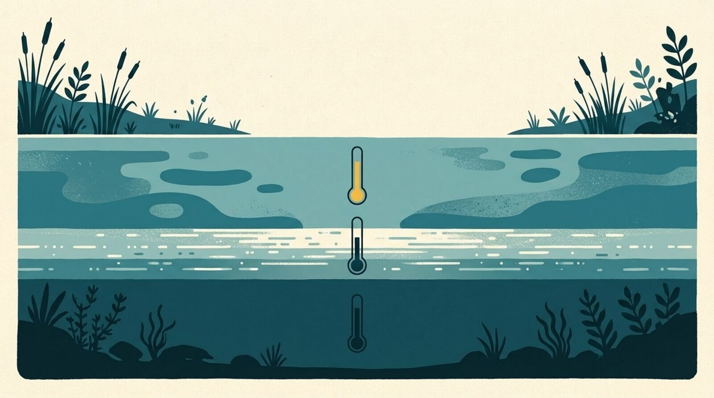

En bref
Par temps chaud, un lac se range en trois couches : l’épilimnion (chaude, en surface), la thermocline (la zone de transition thermique rapide) et l’hypolimnion (plus froid, jusqu’au fond). C’est parce que l’eau chaude est moins dense que l’eau froide : elle flotte dessus.
Pourquoi des couches ?
La plupart des fluides ont une masse volumique qui diminue quand la température monte : la partie chaude monte au-dessus de la partie froide. L’eau de surface d’un lac au repos est donc plus chaude que l’eau un mètre plus bas.
Les trois couches
- L’épilimnion : la couche chaude du dessus. Le vent et les vagues y font circuler l’eau, ce qui répartit à peu près uniformément la chaleur sur les premières dizaines de mètres.
- La thermocline (ou métalimnion) : la couche intermédiaire, zone de transition thermique rapide. Elle peut changer de profondeur au fil de la journée.
- L’hypolimnion : la couche plus froide, jusqu’au fond. Dans un lac eutrophe, il peut manquer d’oxygène.
Pourquoi c’est utile à savoir
La température que donne l’app est celle du modèle à environ 70 cm : la couche de surface. Plus bas, l’eau est plus froide. Quand le vent fait basculer la thermocline, l’eau peut changer vite : voir les seiches internes. En fin d’année, les couches se mélangent : le brassage.
Le vent, la température et la bise du moment, plage par plage, sont dans l’app Mon Lac.
L’eau du Léman en ce moment
La température de chaque plage est dans l’app Mon Lac, mise à jour toutes les trois heures.